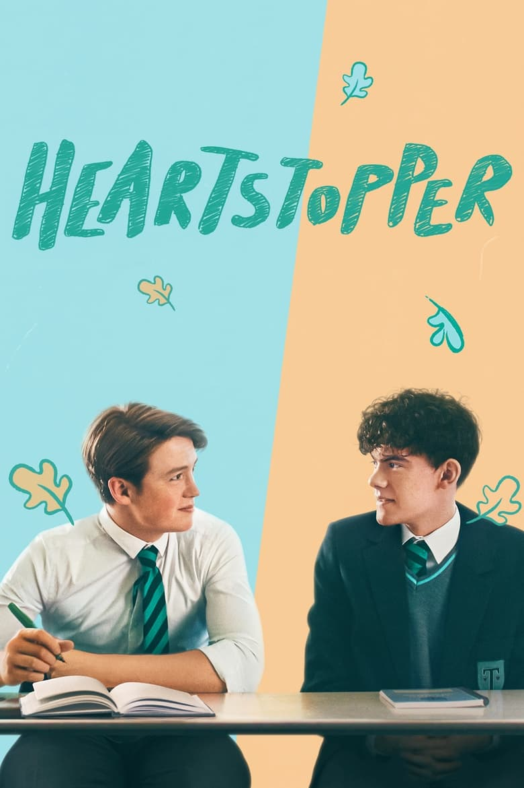

Heartstopper
TV Series - Netflix
IMDB: 8.7/10
| Our Score: 9.7/10
| Our Score: 9.7/10
Teens Charlie and Nick discover their unlikely friendship might be something more as they navigate school and young love in this coming-of-age series.
Story:
Charlie, a year 11 boy, is navigating high school whilst out as gay. The series beautifully encapsulates what it is to be gay, and explores the complexities of the LGBT experience. It captures the essence of teenage life, depicting the highs and lows, the joys and heartaches, and the moments of self-discovery and growth. At the core of the story is Charlie's evolving relationship with Nick, his classmate, and the exploration of their connection as it deepens into something more. The series skillfully portrays the ups and downs of young love, emphasizing the importance of understanding, acceptance, and the power of genuine connections.
WHY you should watch it
Heartstopper has to be the most realistic gay show we have ever seen. It is incredibly relatable, and has believable characters, motivations and choices. There's not much we can really fault it on. We've rewatched it at least 3 times, which is something we never do!Even as lesbians, we still really enjoy this show.